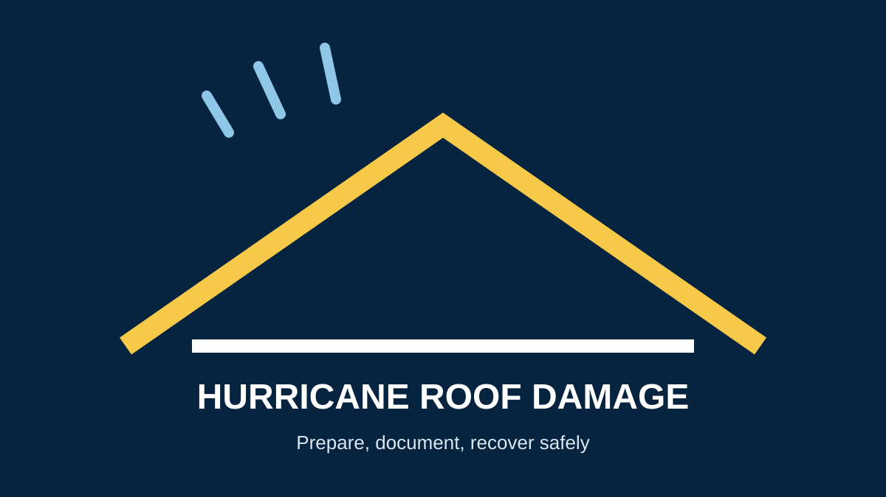

Hurricane Roof Damage in Miami: How to Prepare and Respond
Searches for hurricane roof damage in Miami often happen before or immediately after a storm. The safest strategy is to prepare ahead of time, follow official emergency instructions and have a plan for documenting and assessing roof damage afterward.
How to prepare your roof before a hurricane
- Arrange an inspection if you already have leaks, damaged materials or maintenance concerns.
- Keep gutters and drainage paths clear where they can be cleaned safely.
- Secure loose outdoor objects that could become windborne debris.
- Review your insurance policy and keep important claim contacts available.
- Follow official evacuation and emergency instructions instead of taking unnecessary roof risks.
NOAA hurricane preparedness guidance recommends keeping homes in good repair and consistent with local hurricane building requirements.
Common signs of hurricane roof damage
From the ground or another safe position, look for missing or displaced roofing materials, damaged flashing, visible punctures, fallen debris, water entry and new ceiling or wall stains. Do not climb onto a roof that may be unstable.
What to do after a storm
- Wait until authorities say conditions are safe.
- Photograph and video visible damage from a safe location.
- Take reasonable temporary steps to prevent additional interior damage when safe.
- Contact your insurer if you may have a covered loss.
- Arrange a professional roof inspection to identify repair or replacement needs.
If water is actively entering the property or the roof has major visible damage, see emergency roof repair in Miami.
Does every hurricane-damaged roof need replacement?
No. The correct scope depends on the location and extent of damage, the existing roof condition and whether a durable repair is practical. A professional inspection can separate repairable damage from conditions that justify replacement.
Frequently asked questions
How do I know if my roof was damaged by a hurricane?
Look for missing materials, displacement, punctures, damaged edges, debris impact, water intrusion and new interior staining. Hidden damage may not be visible from the ground.
Should I inspect my roof after a storm?
If your property experienced strong wind, debris impact or water intrusion, a professional inspection can identify problems that a homeowner may miss.
Can I climb on my roof after a hurricane?
Do not climb onto a roof that may be damaged or unstable. Use a safe ground-level view and arrange professional assessment.
Request a Post-Storm Inspection →Sources
- NOAA — Strengthen Your Home: Hurricane Preparedness
- Ready.gov — Hurricanes
- Miami-Dade County — Emergency Management
- Miami-Dade County — Roofing Permits
Related Miami roofing guides
Storm damage roof repair · Roof inspection · Roof insurance claims · Emergency repair signs